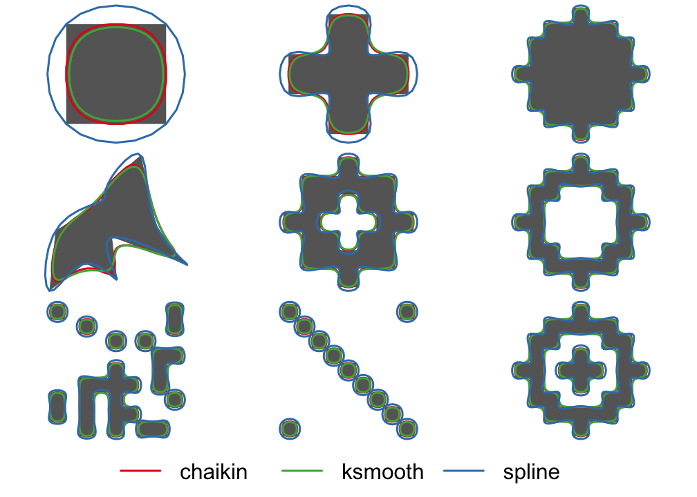
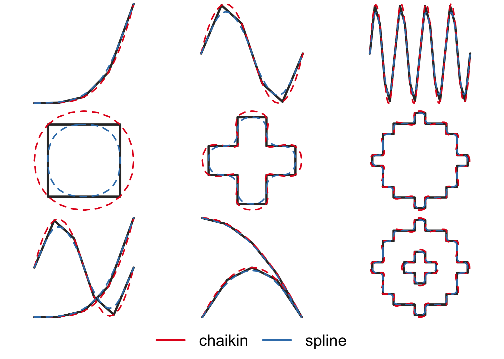

The goal of smoothr is to offer a variety of methods for smoothing spatial features (i.e. polygons and lines). The application is to to make edges appear more natural or aesthetically pleasing, especially when converting raster data to vector format. This package offers support for both sp and sf spatial objects, and the following smoothing methods:
-
Spline interpolation: smoothing using spline interpolation via the
spline()function. This method interpolates between existing vertices and the resulting smoothed feature will pass through the vertices of the input feature. - Chaikin’s corner cutting algorithm: smoothing using Chaikin’s corner cutting algorithm, which iteratively replaces every point by two new points: one 1/4 of the way to the next point and one 1/4 of the way to the previous point.
Installation
You can install smoothr from github with:
# install.packages("devtools")
devtools::install_github("mstrimas/smoothr")Example
Two example feature sets are included in this package. jagged_polygons contains 9 polygons with sharp edges for smoothing, some have holes and some are multipart polygons. We can smooth these using the different methods available and plot a comparison:
library(sf)
library(smoothr)
par(mar = c(0, 0, 0, 0), oma = c(4, 0, 0, 0), mfrow = c(3, 3))
p_smooth_spline <- smooth(jagged_polygons, method = "spline")
p_smooth_chaikin <- smooth(jagged_polygons, method = "chaikin")
for (i in 1:nrow(jagged_polygons)) {
plot(st_geometry(p_smooth_spline[i, ]), col = NA, border = NA)
plot(st_geometry(jagged_polygons[i, ]), col = "grey40", border = NA, add = TRUE)
plot(st_geometry(p_smooth_chaikin[i, ]), col = NA, border = "#E41A1C", lwd = 2, add = TRUE)
plot(st_geometry(p_smooth_spline[i, ]), col = NA, border = "#377EB8", lwd = 2, add = TRUE)
}
par(fig = c(0, 1, 0, 1), oma = c(0, 0, 0, 0), new = TRUE)
plot(0, 0, type = "n", bty = "n", xaxt = "n", yaxt = "n", axes = FALSE)
legend("bottom", legend = c("chaikin", "spline"), col = c("#E41A1C", "#377EB8"),
lwd = 2, cex = 2, box.lwd = 0, inset = 0, horiz = TRUE)
jagged_polygons contains 9 lines with sharp edges for smoothing, some are closed loops requiring special treatment of the endpoints and some are multipart lines. For variety, let’s smooth these using spline interpolation:
par(mar = c(0, 0, 0, 0), oma = c(4, 0, 0, 0), mfrow = c(3, 3))
l_smooth_spline <- smooth(jagged_lines, method = "spline")
l_smooth_chaikin <- smooth(jagged_lines, method = "chaikin")
for (i in 1:nrow(jagged_lines)) {
plot(st_geometry(l_smooth_spline[i, ]), col = NA)
plot(st_geometry(jagged_lines[i, ]), col = "grey20", lwd = 3, add = TRUE)
plot(st_geometry(l_smooth_spline[i, ]), col = "#E41A1C", lwd = 2, lty = 2, add = TRUE)
plot(st_geometry(l_smooth_chaikin[i, ]), col = "#377EB8", lwd = 2, lty = 2, add = TRUE)
}
par(fig = c(0, 1, 0, 1), oma = c(0, 0, 0, 0), new = TRUE)
plot(0, 0, type = "n", bty = "n", xaxt = "n", yaxt = "n", axes = FALSE)
legend("bottom", legend = c("chaikin", "spline"), col = c("#E41A1C", "#377EB8"),
lwd = 2, cex = 2, box.lwd = 0, inset = 0, horiz = TRUE)